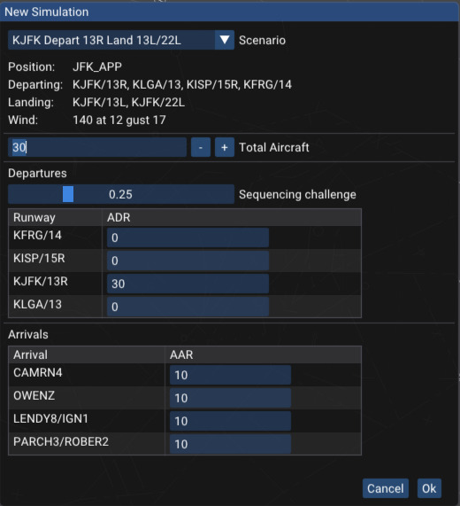
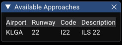
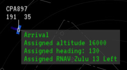
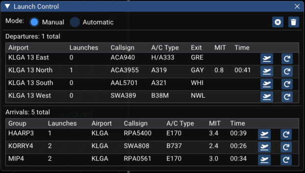
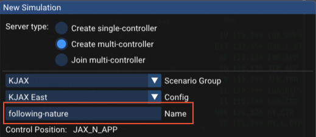
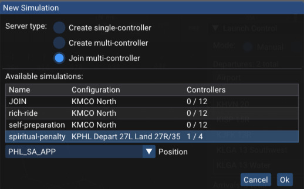
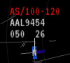

Getting Started
The radar client interface that vice provides is based on STARS.
For familiarity to VATSIM controllers, vice generally follows the keyboard command scheme implemented
in vSTARS; see
the discussion of vice's STARS
emulation below for more information.
The first time you launch vice, a window is shown for configuring the simulation.
(After the first time, the window can be brought up by clicking the "replay" button in the menubar: .)
A number of scenarios are available, some departure-only and
some including both departures and arrivals.
Here is the configuration window for LGA:

(Each scenario usually offers multiple runway configurations.)
In the configuration window, you can set the average departure rate (ADR)
for all of the airports that may have departures in the scenario as well as the average arrival rate (AAR) for all of the
arrival airports.
(The LGA scenario only includes Laguardia Airport, though other scenarios include both a primary airport as well as satellites.)
Both of these rates are specified in terms of aircraft per hour, so an ADR of 30 corresponds to one aircraft departing
every two minutes (on average).
If you'd like an arrival-only scenario, for example, just set all of the departure rates to zero.
The "Sequencing challenge" slider controls how challenging the departure sequence is—the higher it is, the more likely it is
that successive departures will be to the same gate or to the same fix.
For arrivals, the "Go around probability" slider allows setting the probability that each arrival goes around.
After you have configured the simulation, click "Ok" and you will have a STARS scope and flight strip window to work with.
Use the usual STARS commands as appropriate (to initiate track, accept handoffs, handoff to other controllers, etc.),
and the additional ATC commands below to issue control commands to aircraft.
When the simulation starts, vice also displays a small window listing the available approaches.
For this LGA scenario, there is just one approach, though other scenarios may have multiple runways and or multiple airports active.
The approach code—here, "I22"— is used in vice's aircraft control commands like "expect approach"
and "cleared approach".

To free up space, you can close this window by clicking on the "X" in the upper right corner.
Clicking on the button in the menubar will show
the window again.
To adjust the amount of space used for flight strips, right click the line separating the flight strips from the
radar window and drag left or right with your mouse.
A number of buttons are available in the menu bar at the top of the window:
- / : pause or resume the simulation.
- : opens the window to select a new scenario and set its parameters.
- : open a window that allows changing various settings. The most useful one is the simulation rate: you can speed up time during slow times or to increase the challenge.
- : show the window that lists the available approaches.
- : open a window with controls for launching aircraft, either automatically or manually.
- : open this webpage to review vice's documentation.
- : display information about the version of vice you have installed.
- : join the vice Discord.
When you exit vice, it remembers everything going on—all of the aircraft in flight, the instructions they have been given, etc.
The next time you launch vice, it loads all of that back in and you can continue where you left off.
If you'd like to start something new, just click and configure a new simulation.
When vice is paused, you can hover the mouse above a radar track to see information about the instructions the aircraft has been given so far—for example, altitude and speed assignments, whether it has been sent direct to a fix, the approach it has been assigned, etc. An example is shown below. This information is especially useful when resuming a vice session after you have been away from it for a while.

Launching Aircraft
When a new scenario starts, vice automatically launches new departures and arrivals based on the
departure and arrival rates set in the "New Simulation" window.
During a simulation, clicking on the departing plane icon in the menubar
opens a window that allows more control over aircraft launches.
(Note that when vice is used with multiple controllers in the same simulation, then only one controller
may have this window open at a time.)
The rates for automatic launches can be adjusted in this window. Alternatively, aircraft can be launched manually. If manual launches are selected,
the window shows all of the available departure runways and exits as
well as all of the arrivals, as shown below. Clicking the aircraft icon for a departure or arrival
causes the aircraft shown to be launched. If you'd like a different aircraft for the
next launch (for example, to have a heavy aircraft), click the redo icon until you're happy with the selection.
The window also shows the elapsed time since the launch of each type as well as how many
miles in trail (MIT) there would be if the next aircraft was launched.
To clear out all of the current aircraft and restart, click the trash icon:
.

Multiple Controllers
With vice you can also have multiple controllers working aircraft together.
Select "Create multi-controller" in the "New Simulation" window and
you can select a scenario and set its parameters in more or less the same way
that you do with a single controller.
Here is the top part of the multi-controller configuration window;
all of the settings that are the same as for single-controller aren't shown.

Each multi-controller simulation has a name associated with it;
vice chooses a random one by default (above, it's "following-nature").
You're welcome to choose a different name if you prefer.
These names can be used so that you can tell other people which
simulation to choose in order to join you.
Selecting "Join multi-controller" shows a list of the simulations
that are currently available, including how many controllers
are signed into each one.
Note that the simulation names are shown in the first column.
After selecting one, you can choose one of the available control
positions and join.
vice also allows you to join a simulation as an observer,
in which case you have no control capabilities.

ATC Commands
In order to issue control commands to aircraft, type the appropriate command from the table below
and click on an aircraft's track. After you issue a command, the virtual pilot's readback is shown at the bottom of the window.
The aircraft will then start following that instruction, to the best of its abilities.
Unlike VATSIM, the pilots will always do exactly what you tell them to.
If you'd like to issue multiple commands to an aircraft,
enter the commands one after another with a space between them and
then click on the appropriate aircraft.
| Command |
Function |
Example |
Hheading |
Directs the aircraft to fly the specified heading. It will turn in whichever direction gets it to that heading most quickly.
If no heading is given, the aircraft is instructed to fly present heading. |
H050, H |
Lheading |
Directs the aircraft to turn left to the specified heading. |
L130 |
LdegreesD |
Directs the aircraft to turn the specified number of degrees to the left. |
L10D |
Rheading |
Directs the aircraft to turn right to the specified heading. |
R210 |
RdegreesD |
Directs the aircraft to turn the specified number of degrees to the right. |
R20D |
Dfix |
Directs the aircraft to proceed direct to the given
fix. (The specified fix must be in the aircraft's
flight plan, including on the approach assigned to it.) |
DWAVEY |
Dfix/Hheading |
Directs the aircraft to depart the specified fix at the given heading.
(The specified fix must be in the aircraft's flight plan.) |
DLENDY/H180 |
Cfix/Aaltitude/Sspeed |
Directs the aircraft to cross the specified fix at the given altitude and speed.
Either one or both of A and S may be specified. |
CCAMRN/A110 |
Calt |
Directs the aircraft to climb to the specified altitude, which is given in hundreds of feet. |
C170 |
Dalt |
Directs the aircraft to descend to the specified
altitude, given in hundreds of feet. |
D20 |
Sknots |
Gives the aircraft a speed restriction. If the restriction is given after an aircraft is cleared for an approach,
the speed restriction is in effect until 5 mile final. If no speed is given, then the aircraft is instructed
"cancel speed restrictions". |
S210, S |
Eapproach |
Tells the aircraft to expect the specified
approach. This command must be used before an aircraft
is cleared for an approach and it also adds the approach
fixes to the end of the aircraft's route. |
EI2L |
Capproach |
Clears the aircraft for the specified
approach. The aircraft must have been told to expect the approach before it is cleared for it. |
CI2L |
CAC |
Cancels approach clearance for an aircraft. |
CAC |
CSIapproach |
Clears the aircraft "straight in" for the specified approach.
(This command is only useful for approaches that include procedure turns.)
The aircraft must have been told to expect the approach before it is cleared for it. |
CSII6 |
X |
Deletes the specified aircraft from the simulation. This command is useful when one starts going down the tubes. |
X |
Airspace
vice is able to indicate when aircraft are outside of the departure or approach airspace,
if it has information about the airspace boundaries.
(This information is not available at all airports.)
If an aircraft is outside of its assigned airspace, a red "AS" error will be printed at the
top of its datablock, as shown below.
The valid altitudes for the aircraft are shown as well, if there are any valid altitudes
at its current location.
For example, the aircraft below is at 5,000' but should be between 10,000' and 12,000' (or should be at a different location!)

Two commands are available to draw the boundaries and altitude ranges of the departure and approach airspace.
(Note that the placement of the drawn altitude labels is not always ideal.)
| Command |
Function |
DA |
Draw the approach airspace, or stop drawing the approach airspace if it is currently being shown. |
DD |
Draw the departure airspace, or stop drawing the departure airspace if it is currently being shown. |
STARS Emulation
vice attempts to present a reasonably accurate
representation of
the Standard
Terminal Automation Replacement System.
Its focus is to provide the STARS functionality that is
useful for regular TRACON controlling; thus, obscure features like
military operations area commands are not supported.
If you are familiar with the actual STARS system, suggestions
about how to improve vice's accuracy would be happily accepted! Head on over
to the vice discord...
vice mostly follows the keybindings
used in vSTARS; the
vSTARS
Command Reference provides a summary.
Differences from vSTARS
vice supports the following features from STARS that
are not present in vSTARS:
- vice supports the STARS "dwell" mode, which draws
the datablock and leaderline of track under the mouse more
brightly when it is enabled. Dwell mode can be configured
by choosing "SHIFT" from the main DCB menu and then
selecting the "DWELL" button, or via the following keyboard
commands:
[multifunc] D E: enable dwell mode.[multifunc] D L: lock dwell
mode—the selected aircraft remains highlighted
even if it or the mouse cursor moves.[multifunc] D I: inhibit (disable) dwell mode.
- To quicklook a controller, vice does not
support entering the controller id and hitting enter to
toggle quicklook. Rather, the
[multifunc] Q [id]
command must be used.
- vice supports the "plus" specifier for quicklook:
if a plus sign is specified after a controller id
when enabling quicklook, the datablocks for that controller's tracks will
be white, not green. (Similarly,
ALL+ can be
specified to quick look all controllers' traffic in this
way.)
- vice allows placing DCB at the top, left, right,
or bottom of the window using the "DCB TOP", "DCB LEFT", "DCB
RIGHT", and "DCB BOTTOM" buttons.
- vice supports displaying the current weather radar
for the selected location (though not yet with shading that
matches STARS.)
Windows
To install vice on Windows, download and launch the installer below.
After installation, vice will be available in the Windows Start menu and a shortcut will be added to your desktop.
Your browser may warn about the installer being from an unknown publisher and when you run the installer, Windows will put up a window informing you that it has protected your PC and prevented the installer from running. Click "More Info" and then "Run anyway" to proceed with installation.
Download Vice v0.10.4 for Windows
Macintosh
On a Mac, download the zip file below; it contains a universal binary that runs
on both Intel and Apple CPUs. Note that MacOS Big Sur or a more recent version of OSX is required.
After opening the zip file, drag Vice.app to your Applications folder to install it.
Download Vice v0.10.4 for Mac
Reporting Bugs
If you encounter bugs in vice, apologies!
It would be of great help if you would send in a report if vice crashes or if you see mistakes in
how it simulates aircraft or the STARS interface.
The best way to report bugs is via the "bugs" channel on the vice discord.
Alternatively, if you have a github account, you can
file bugs directly in vice's issue tracker.
Release History
0.10.4 (16 August 2023)
- Added support for STARS Converging Runways Display Aid (CRDA).
- Made multiple improvements to aircraft flight modeling,
including more accurate climbs at departure and better
handling of wind.
- Tuned up pilot radio communications, including adding
initial contact messages.
- Fixed a bug where after quitting and later resuming a
simulation, some aircraft would forget their routing.
- Added support for the STARS Maps system list.
- Facility engineering changes:
- Added "reporting_points" to scenarios: fixes aircraft may use
when reporting their current position.
- Added support for specifying volumes of space
where collision alerts are inhibited.
- Altitude restrictions at fixes are now more flexible:
rather than just "at", they may be "between", "at or
above," or "at or below."
0.10.3 (1 August 2023)
- Added "quick look" support to the STARS implementation.
- Added support for STARS dwell mode.
- Fixed a rare crash when manually adjusting launch rates.
- Various small improvements to the JAX and CLT scenario files.
- Many additional small cosmetic and functionality
improvements to the STARS radar scope.
0.10.2 (28 July 2023)
- Added scenarios for the A80 (ATL) and A80 (BOS) TRACONs (thanks Mike K!).
- Fixed a bug with drawing *J cones in the STARS scope.
- Many improvements to the STARS DCB, including better
rendering of the buttons, more support for configuring
font size and brightness, as well as the ability to
position the DCB on the top, bottom, left, or right
edge of the screen.
0.10.1 (25 July 2023)
- Updated the font used in the STARS radar scope.
- Fixed a few bugs with drawing radar tracks in the
STARS scope.
- Fixed a rare crash with incorrect command input to the STARS scope.
0.10.0 (22 July 2023)
- Vice now supports multiple controllers working in the
same simulation. In the "New Simulation" window, choose
"Create multi-controller" to create a new simulation or
"Join multi-controller" to join an existing one.
- Facility engineering changes:
- Removed
"default_controller" and renamed "callsign" in
scenarios to "solo_controller". Scenarios now take an
optional "multi_controllers" object to specify a
multi-controller scenario. Added "full_name" to
controller specifications for better radio readback text.
- Launches of arrivals and departures can be controlled
manually; click on the departing aircraft icon in the
menu bar to open a window with launch
controls. Alternatively, launch rates can be controlled
during a session via that same window.
- Various improvements to the accuracy of the STARS
radar scope simulation.
- Available approaches are now shown by vice at initial
connection time and via the button
in the menu bar.
- Many small bug fixes to aircraft flight modeling.
- New scenarios and improvements:
- Added C90, including O'Hare East and West
ops, MDW all configs
- Added CLE TRACON, including final, feeder, and
North/South scenarios
- Added CLT TRACON, North and South configs
- JAX: added DAB and the TEBOW1 arrival
- N90: added multi-controller scenarios at JFK and PHL
0.9.2 (3 July 2023)
- Fixed the behavior of *T to better match
STARS/vSTARS: the line is now drawn to the mouse
position after the first point is selected, without
waiting for the second point.
- Added more checks when loading scenario descriptions;
in particular, misspellings and unused JSON objects
are detected and an error is issued. This led to
numerous small fixes in all of the the scenarios.
0.9.1 (20 June 2023)
- Fixed a bug where arrivals wouldn't obey altitude
restrictions in STARs(!).
- Improved navigation: crossing restrictions beyond any
at the immediately upcoming fix are now
considered. Aircraft are now much better at starting
altitude and speed adjustments in time to meet the
crossing restrictions.
0.9.0 (15 June 2023)
- All new flight modeling engine supports procedure turns (both racetrack and standard 45/180)
and more accurate turns to intercept localizers, etc. The approaches in the existing scenarios
have been updated to include their procedure turns, where appropriate.
- A number of new aircraft control
commands have been added:
- Cancel speed restrictions
- Cleared straight in approach
- Cross fix at altitude and speed
- Depart fix at heading
- Fly present heading
- When a departure is handed off to a virtual controller, the other controller won't
climb it further until after it is clicked by the user to acknowledge the handoff.
- Fixed very small fonts being used on Windows systems with high-DPI displays
- Numerous other small fixes and improvements, including in the wind modeling and fixing
a case where arrivals would fly faster than the aircraft is capable.
- Facility engineering: In addition to new directives to specify procedure turns,
there are a number of changes to how routes are specified.
Earlier Releases
- 0.8.1: fixed a bug where the STARS window wouldn't show anything.
- 0.8.0: When you quit vice, now it remembers all of the aircraft; when you launch it again, you can resume right where you left off.
When the sim is paused, hovering the mouse on a radar track displays information about its routing and assignments.
Many additional small bugfixes.
- 0.7.0: Added LGA scenarios (thanks to Arya T!), and various small bug fixes.
- 0.6.6: Small JAX scenario fixes and added ISP and HVN arrivals/departures to the JFK scenario.
- 0.6.5: Fixed another bug with intercepting the localizer.
- 0.6.4: Fixed a bug with intercepting the localizer that occasionally led to aircraft hanging in the air for a while before proceeding.
- 0.6.3: Added JAX scenarios for F11. Updated PHL scenarios for arrival changes.
- 0.6.2: Added go arounds and ABE TRACON scenarios.
- 0.6.1: Fixed a crash related to handed off aircraft and sped up launching vice.
- 0.6.0: Added scenarios in the F11 TRACON (MCO, SFB, ISM, ORL...). Thanks to Mike K!
- 0.5.1: Fixed bug with RNAV approaches not descending, improved JFK arrival spawn and route details.
- 0.5.0: Added new scenarios for EWR and LIB departure (thanks to Adam Bolek!)
- 0.4.3: Allow specifying JSON config on the command line, to make it easier to develop new scenarios.
- 0.4.2: Fixed a crash at first launch, updated syntax for "turn left/right X degrees" commands.
- 0.4.1: Fixed bugs in datablock positioning, added "turn left/right X degrees" commands.
- 0.4.0: Added PHL scenarios, airspace warnings, and FRG arrivals and intra-TRACON arrivals for JFK.
- 0.3.1: Added JFK approach scenarios, improved aircraft flight model, routes, and airlines.
- 0.2.1: Initial release
Specifying Locations
Throughout the vice configuration files, it's often necessary to specify various locations on the Earth.
vice has a built-in database of all of the airports, VORs, NDBs, and fixes in the United States (courtesy of the FAA),
which allows using these directly for specifying locations. Locations can also be specified via
latitude-longitude positions, given as strings. For convenience, multiple latitude-longitude formats are supported.
| Encoding |
Description |
Example |
| Name of VOR/NDB/fix |
A string giving the name of an airport, VOR, NDB, or fix in the United States. |
"JFK" |
| Decimal value pair |
A pair of decimal numbers where the first specifies the longitude and the second specifies the latitude. |
"40.6328888,-73.771385" |
| Degrees, minutes, seconds |
A pair of values with position specified in degrees, minutes, and seconds, separated by periods.
"N" and "S" are used to distinguish North and South latitudes and similarly for "E" and "W" with longitudes. |
"N40.37.58.400, W073.46.17.000" |
| ISO6790 Annex H |
A more compact degrees/minutes/seconds representation; see the Wikipedia page for details. |
"+403758.400-0734617.000" |
(In all three examples above, the location specified is the same—the JFK VOR.)
In vice, if you hold down the control and shift keys and click on a point on the video map, the corresponding
latitude-longitude position is copied to the clipboard—this can be very useful when developing new scenarios!
Routes
vice uses a custom syntax for specifying the routes of aircraft, both for arrivals and departures.
In addition to the lateral positions along the route, it is possibly to specify speed and altitude restrictions, handoff points,
and headings to fly.
Here is an example route from a JFK departure. The first two waypoints are custom fixes at the start and end of the KJFK 31L runway,
specified via the "fixes" object in the scenario group, while the next three are standard
fixes. The "/h223" after "RNGRR" specifies that the aircraft should fly a 223 heading as departing RNGRR.
It will maintain that heading until it
is further vectored by the controller. If there are further fixes after such a heading, the aircraft may be sent direct to one of
those fixes by the controller.
"_JFK_31L _JFK_13R SKORR METSS RNGRR/h223"
A number of items like headings can be specified with a fix:
-
/arestriction: cross the fix with the specified altitude restriction (with altitudes specified in 100s of feet).
The following options are available for specifying altitude restrictions:
- low
-high: cross at an altitude between low and high.
- alt
-: cross at or below alt
- alt
+: cross at or above alt
- alt: cross at alt
-
/hheading: depart the fix at specified heading
-
/sspeed: cross the fix at the given speed
-
/ho: the aircraft should be handed off from the virtual controller to the user when it departs the fix
For approach fixes that have procedure turns, a number of additional items can be specified:
/hilpt: there is a hold in lieu of procedure turn (i.e., a racetrack procedure turn) associated with the fix.
The default is right turns and a 1 minute limit for ILS approaches and a 4 nm limit for RNAV approaches.
Different limits can be specified directly; for example /hilpt6nm gives a procedure turn with a 6 nm limit and
/hilpt2min specifies a 2 minute limit. For left turns, add a l after the slash, like
/lhilpt./pt45: specifies that there is a standard 45 degree procedure turn at the fix. (This has the same defaults—
right turns, 1 minute (ILS) / 4 nm (RNAV)—as HILPTs. Alternative values are specified the same way.)/ptaaltitude: if the aircraft should descend during the procedure turn, this can be used to specify
the final altitude it should have at the end of the turn. (The altitude should be given in 100s of feet.)/nopt180: specifies that aircraft approaching the fix in the 180 degree semicircle of directions aligned
with the final approach course should not perform the procedure turn. (As an example, see the KJAX RNAV Z 8 approach; this applies for aircraft between heading 346 and 166
arriving at UDAQI.)/nopt: when specified at a fix prior to one with a procedure turn, indicates that aircraft that
pass that fix should not fly the procedure turn.
Airlines and Aircraft
Both departures and arrivals need to know about which airlines fly their routes and which aircraft they use for them.
Airlines are specified via their ICAO strings (e.g., AAL for American Airlines). See the file
openscope-airlines.json
for the database of possible airlines.
In that file, each airline may have one or more aircraft fleets specified, in its "fleets" member.
If no fleet is specified, vice randomly chooses an aircraft type from the "default" fleet, but if
a particular fleet's aircraft is a better match to a route, you may want to use it.
For example, AAL's "long" fleet would be a good choice for trans-Atlantic flights.
For reference, the available types of aircraft and their performance characteristics are available in the
openscope-aircraft.json
file.
As is probably obvious, both of these databases are by way of openScope,
which kindly made them available under the MIT license.
Video Maps
Video maps are specified separately from the rest of the configuration since they require fairly large files and are not normally edited by hand.
Video map files are simply JSON files with a series of members, each one of which stores an array of strings giving latitude-longitude positions.
Each successive pair of positions specifies a line to be draw when rendering the video map.
The following shows an excerpt from the ZNY video maps file that gives a sense of the format.
{
"ABE": [
"N041.00.05.616,W075.32.00.217",
"N041.00.01.277,W075.32.29.551",
...
],
"ABE - MVA": [
"N040.31.00.726,W076.31.35.993",
"N040.30.09.063,W076.31.21.985",
...
],
...
}
There is a utility program for extracting video maps from
VSTARS configuration files; it is available from the
vstars2vice
releases page. Binaries for both Windows and Mac are
available.
It is a command-line program: the first argument should be
the path to a VSTARS configuration file and the second a path
to an output file.
Scenario Groups
vice offers users a variety of ATC scenarios, where a scenario consists of one or more airports being controlled,
a control position (departure, approach, etc.), and airport configurations—the runways that are active at each
airport. Scenarios are organized in scenario groups, which generally collect multiple control scenarios at a single
airport.
Each scenario group is specified by its own JSON file; see the resources/scenarios/ directory in the
vice source code distribution for examples.
These are the elements of a scenario group:
| Element |
Type |
Description |
| "airports" |
Object |
Defines all of the airports that are included in the scenarios. See the airports section for details. |
| "airspace" |
Object |
Defines the extent of controllers' airspace; see airspace for details. |
| "arrival_groups" |
Object |
Defines the possible arrival routes; see arrivals. |
| "center" |
String |
Default radar scope center (as a latitude-longitude position.) |
| "control_positions" |
Object |
Information about all of the controllers that are used
in the scenarios in the group. Each member specifies a
controller with the corresponding callsign. For each
controller, the following members should be specified:
- "full_name": the name of the control position, used in radio readbacks (e.g., "Philadelphia approach")
- "frequency": the controller's radio frequency, expressed as an integer (e.g., 125325 for 125.325)
- "scope_char": a string giving a single character to use on radar scopes for tracks owned by this position (e.g., "C")
- "sector_id": the controller's sector id, as used for handoffs, etc. (e.g., "N56")
|
| "default_scenario" |
String |
A default to use for the initial scenario when the scenario group is chosen.
Must match one of the members in "scenarios". |
| "fixes" |
Object |
Each member associates a name with a latitude-longitude location. These names can be used when specifying
routes for departures and arrivals. (Note that they cannot be used when specifying other locations in the scenario group configuration.)
For example, this associates a useful name with the point at the end of runway 22R at JFK: "_JFK_22R": "N040.39.00.362,W073.45.49.053".
|
| "inhibit_ca_volumes" |
Array of objects |
Each entry specifies a volume of space where collision
alerts are inhibited. It can be useful to specify these
around airports so that alerts aren't issued for aircraft
arriving/departing on parallel runways. Each object has
the following members:
- "name": a string used to identify the volume in
system lists.
- "type": either "circle" or "polygon"
- "floor": number giving the minimum altitude of the volume.
- "ceiling": number giving the maximum altitude of
the volume.
For "circle" volumes, there are two additional members:
- "center": the location of the center of the volume.
- "radius": the radius of the volume, in nautical miles.
For "polygon" volumes, an additional parameter specifies
its extent:
- "vertices": an array of locations specifying the
outline of the volume.
|
| "magnetic_variation" |
Number |
Number of degrees difference between true North and magnetic North.
Around New York, for example, this value is approximately 13. |
| "name" |
String |
The name for the scenario group. This name cannot be the same as the name for any of the other scenario groups. |
| "nm_per_latitude" |
Number |
Number of nautical miles per degree of latitude in the area around the scenario group's center point.
On Earth, this should be 60.
|
| "nm_per_longitude" |
Number |
Number of nautical miles per degree of longitude in the area around the scenario group's center point.
This value depends on the center point's latitude; it's around 45 around KJFK, for example.
|
| "primary_airport" |
String |
The main airport for the scenario.
This is used to determine which airport's altimeter and winds to include at the top of the SSA list in the STARS radar scope. |
| "radar_sites" |
Object |
Specification of all of the radar sites.
(A good source of data for these is the RadarSites section of your ARTCC's vSTARS configuration file.)
Each object member describes a radar site; the member's name gives the site's identifier.
Each radar site has the following configuration values:
- "char": a single character string identifier for the radar
- "elevation": an integer giving the radar site's elevation in feet
- "position": the radar's lateral position
- "primary_range": an integer giving the range in nautical miles at which the radar can pick up a primary track (typically, 60)
- "secondary_range": an integer giving the range in nautical miles at which the radar can pick up a secondary track (typically, 120)
- "silence_angle": the spread angle in degrees of the radar's "cone of silence"—the volume above it where aircraft cannot be tracked (typically, 30)
- "slope_angle": the angle in degrees with respect to the ground that the base of radar coverage increases as a function of distance from the radar site (typically, 0.175)
|
| "range" |
Number |
Default radar scope center range in nautical miles. If unspecified, a 50 mile range is the default. |
| "reporting_points" |
Array of strings |
Each entry specifies a fix that aircraft may use at
initial contact when reporting their position ("AAL411, 5
miles Northeast of LENDY..."). |
| "scenarios" |
Object |
This defines all of the ATC scenarios that are available in the scenario group. See the scenarios section for details. |
| "scratchpads" |
Object |
Each member specifies a scratchpad entry that is assigned when a departing aircraft has a given exit fix. Example: "MERIT": "MER" |
| "stars_maps" |
Array of objects |
These objects specify the available video maps in the STARS scope; the first 6 are shown in the main DCB and all are available under the "MAPS" sub-menu.
Each one has three member values:
- "group": either 0 or 1, to denote map group "A" or "B". (STARS allows setting the brightness of these separately.)
- "label": a short string giving the map's label to show in the STARS DCB (e.g., "JFK4")
- "name": a string giving the name of the map in the video map file (e.g., "N90 JFK - 4s")
|
| "video_map_file" |
String |
Filename of the video map file from which the maps specified in "stars_maps" are found (e.g., "videomaps/zny-maps.json.zst") |
Airports and Departures
The airports in a scenario group are specified via the "airports" member of the scenario group.
Each airports is a separate member, named according to the airport's ICAO code (e.g., "KJFK").
The airport object then has the following member variables:
| Element |
Type |
Description |
| "approaches" |
Object |
Defines all of the approaches to the airport that may be used by aircraft.
Member names give the abbreviated name of the approach, as used in vice's ATC commands.
Each approach is then defined by the following members:
- "full_name": a string giving the full name of the approach (e.g., "RNAV Z Runway 13L")
- "runway": a string describing the runway the approach ends at (e.g., "13L")
- "type": a string indicating the type of the approach; it must be either "ILS" or "RNAV"
- "waypoints": an array of one or more strings giving the approach's route.
Multiple strings can be provided for "waypoints" for approaches with multiple IAFs (e.g. an RNAV "T" configuration).
Arriving aircraft are removed from the simulation when they reach their last approach waypoint.
Thus, for all of the routes specified, the last waypoint should generally be at the runway threshold with a ground-level altitude restriction.
|
| "approach_regions" |
Object |
Each member name specifies information about the region of space associated with a runway
when CRDA is used and it is one of the converging runways. See the
vSTARS Facility Engineer's Guide
for details about their semantics. Note that if you have a vSTARS XML file for a facility with a CRDA
specification, each of these corresponds to a value in the XML file.
The following members specify the lateral extent that
an aircraft must be inside for a ghost aircraft to be generated for it:
- "reference_point": position with respect to which the lateral and vertical extents are defined. (Often, the threshold
of the runway.)
- "reference_heading": heading that is opposite to the runway heading.
- "reference_length": length in nm of the reference line.
- "heading_tolerance": maximum difference between an aircraft's heading and the runway's heading for a ghost aircraft to be displayed.
- "near_distance": distance from the reference point along the reference heading where the lateral volume begins.
- "near_half_width": half of the width of the reference volume at the near distance.
- "region_length": length of the lateral volume along the reference heading, starting from the near distance point.
- "far_half_width": half of the width of the reference volume at the far distance.
These members specify the vertical extent that an aircraft must be inside to have a ghost aircraft:
- "descent_distance": distance from the reference point in nm where aircraft are expected to start its final descent.
- "reference_altitude": altitude of the reference point.
- "descent_altitude": expected aircraft altitude when it's at the descent distance.
- "above_altitude_tolerance": maximum distance in feet an aircraft may be above its expected altitude and still have a ghost be drawn for it.
- "below_altitude_tolerance": maximum distance in feet an aircraft may be below its expected altitude and still have a ghost be drawn for it.
|
| "converging_runways" |
Array of objects |
Each object specifies a pair of converging runways that
will be included in the STARS CRDA list. Each object has
the following members:
- "runways": array of two strings referencing two runways
specified in "approach_regions".
- "leader_directions": array of two strings
specifying the compass direction ("N", "NE", "E",
...) that will be used for leader lines for ghost
aircraft from the two respective runways.
- "tie_symbol": A single-character string giving the
symbol to use on the STARS display for ghost aircraft
when CRDA "tie" mode is used.
- "stagger_symbol": A single-character string giving the
symbol to use on the STARS display for ghost aircraft
when CRDA "stagger" mode is used.
- "tie_offset": number giving an offset in nautical
miles to add to ghost aircraft's distance from the airport when
"tie" mode is used.
|
| "departure_routes" |
Object |
Each member is an object that defines routes for the specified a departure runway.
These routes are followed by aircraft departing that runway, organized by exit fix.
See below for documentation of the per-runway departure route object. |
| "departures" |
Array of objects |
Each object in the array defines a departure to a destination, including one or more airlines that fly that departure,
the type of aircraft flown, and information about the aircraft's path. See below for details of the departure object. |
| "departure_controller" |
String |
If specified, gives the virtual controller initially controlling the aircraft. |
| "elevation" |
Number |
The airport's elevation in feet |
| "exit_categories" |
Object |
Each member corresponds to a fix used as an exit for departures in the scenario group and allows associating a string category
name with each exit. (These categories are used so that users can control the mix of exits used in a scenario.)
Example: "ARD": "Southwest" |
| "location" |
String |
The airport's location |
| "tower_list" |
Number |
Gives which of the three STARS tower lists the airport should be associated with, if any. If present, should have the value 1, 2, or 3. |
There are two pieces for specifying departures: their initial route leaving the airport, which depends on the active departure runway,
and their subsequent route out of the TRACON, which does not. These two parts are specified separately.
The "departure_routes" object gives the initial routing for departures, based both on the runway they are departing as well
as their exit fix. Here is an excerpt from the KJFK departure routes:
"departure_routes": {
"13R": {
"ARD,DIXIE,RBV,WHITE": {
"cleared_altitude": 5000,
"route": "JFK5",
"waypoints": "_JFK_13R _JFK_31L #185"
},
...
The members of "departure_routes" are strings identifying the departure runway; each departure runway's routes
are then represented by an object with one or more members that specify comma-separated lists of exit fixes.
(Thus, the specification above applies to departures with exit ARD, DIXIE, RBV, or WHITE, departing runway 13R.)
The departure route specification has three members:
- "cleared_altitude": the initial altitude that aircraft are cleared to
- "route": a string naming the route that is added to the start of aircraft's route as shown in flight strips, etc.
- "waypoints": the initial series of waypoints that the aircraft follows. (Here, the first two are custom fixes specified
at the ends of the runway.
On departure the aircraft will fly the specified waypoints and then the waypoints specified in the route
to its destination. In this case, aircraft will remain on a 185 heading until vectored by the controller
(as explained in Routes, above.)
The other half of specifying departures is the array of objects stored in "departures". Each one describes a departure
to a particular destination. Here is a JFK departure to Paris Charles de Gaulle:
{
"airlines": [
{
"fleet": "long",
"icao": "AFR"
}
],
"destination": "LPFG",
"exit": "HAPIE",
"route": "HAPIE YAHOO WHALE N251A JOOPY NATZ MALOT NATZ GISTI LESLU M142 LND N160 NAKID M25 ANNET UM25 UVSUV UM25 INGOR UM25 LUKIP LUKIP9E"
},
...
Four things must be specified with each departure:
- "airlines": The airlines that fly the route and which part of their fleet of aircraft is used; see airlines
and aircraft below for more information
- "destination": the ICAO airport code for the destination. This is only used in flight strips and for the aircraft's datablock on the
radar scope; it does not affect its routing.
- "exit": the exit fix for the departure. In conjunction with the departure runway, this is used to determine the aircraft's
route leaving the airport using "departure_routes".
- "route": the aircraft's route to the destination. This is mostly used so that flight strips have plausible routes, though
vice does its best to have the aircraft follow the given route after it reaches the exit fix.
Arrivals
Arrivals are specified via the "arrival_groups" variable, which allows specifying one or more STARs that
bring aircraft to the TRACON. Members of "arrival_groups" give the names of arrival groups; each one stores
an array of one or more arrival objects.
Because arrival rates are specified per-arrival group rather than per-STAR,
vice can simulate center controllers sequencing multiple STARs into a single arrival flow rather than
spawning arrivals on two STARs that follow nearby routes and thus should be sequences.
Each object stored in an "arrival_groups" array corresponds to a STAR.
These objects have the following members:
| Element |
Type |
Description |
| "airlines" |
Object |
Destination airports and airlines for the arrivals. See example below. |
| "cleared_altitude" |
Number |
The altitude to which the aircraft is descending when first spawned. |
| "cruise_altitude" |
Number |
The aircraft's final cruise altitude. (This is only
used in the aircraft's flight strip.) If
unspecified, vice tries to choose a reasonable
cruise altitude based on the distance and direction of flight. |
| "initial_altitude" |
Number |
The aircraft's altitude when first spawned. |
| "initial_controller" |
String |
The callsign of the controller who is initially tracking the aircraft. |
| "initial_speed" |
Number |
The aircraft's initial speed when first spawned. |
| "route" |
String |
Route to show for aircraft in flight strips. Not used for navigation. |
| "runway_waypoints" |
Object |
This specifies runway-specific waypoints. After an approach is assigned to an aircraft, the corresponding
runway waypoints are added to its route. Note that the first waypoint in each entry in "runway_waypoints"
must match the last waypoint in "waypoints". (See the example below.) |
| "speed_restriction" |
Number |
If present, gives a speed restriction in knots |
| "waypoints" |
String |
The series of waypoints that aircraft should fly. New aircraft are spawned at the first waypoint. These waypoints
should include a "@" directive at the point where the aircraft should be handed off from the virtual controller
to the user.
|
STARs are sometimes able to deliver aircraft to multiple airports. Therefore, the "airlines" member
is an object with airport names as members. Each of the airports is associated with an array of objects
that specify departure airports, airlines, and (optionally) airline fleets. Here is an excerpt from the
CAMRN4 arrival group at KJFK:
"airlines": {
"KFRG": [
{
"airport": "KDCA",
"icao": "EJA"
},
...
],
"KJFK": [
{
"airport": "MMMY",
"fleet": "long",
"icao": "AMX"
},
...
]
}
We can see that CAMRN4 applies to both the KFRG and KJFK airports, though with different airlines
and different departure airports for the arrivals. The specified departure airports (here, KDCA and MMMY)
are only used so that flight strips and data blocks on the scope are realistic, but the specified airlines
are used to select the type of aircraft from their fleets. As elsewhere, a value for "fleet" may be specified
to limit which types of aircraft may be chosen.
The "runway_waypoints" member can be used for STARs that have different routes depending on the runway.
When the user instructs the aircraft to expect a particular approach then the corresponding waypoints are
added to its route. As an example, the specification of the KPHL JIIMS4 arrival
starts with the following string for "waypoints": "HEKMN N039.27.43.645,W074.56.38.400 @ JIIMS@a8000".
(The second point is used to set the handoff point to be between HEKMN and JIIMS.)
It then has the following "runway_waypoints", corresponding to the runway-specific routes.
Note that all start with JIIMS, the same fix at the end of "waypoints".
"runway_waypoints": {
"27L": "JIIMS@a8000 ZMRMN CHPMN PSOUT MKORD #87",
"27R": "JIIMS@a8000 ZMRMN CHPMN PSOUT MKORD #87",
"17": "JIIMS@a8000 SNEDE #312",
"35": "JIIMS@a8000 SNEDE #312",
"9L": "JIIMS@a8000 WUDRR WEVVE ERNYY #268",
"9R": "JIIMS@a8000 WUDRR WEVVE ERNYY #268"
},
Airspace
Airspace volumes may optionally be specified using the "airspace" object in the scenario group.
These volumes may be assigned to controllers in scenarios, in which case vice will show an
alert when aircraft are outside of the controller's airspace. The airspace object has two members:
| Element |
Type |
Description |
| "boundaries" |
Object |
Defines all of the airports that are included in the scenarios. See the airports section for details. |
| "volumes" |
Object |
Defines all of the airports that are included in the scenarios. See the airports section for details. |
Each member in "boundaries" names a polyline of one or more line segments. Polylines are specified by arrays of locations.
The first and second points specify the first line, the second and third points specify the second line, and so forth.
Here is an example from the KPHL airspace:
"PHL_DQO27_33": [
"N039.21.58.949,W075.28.55.977",
"N039.25.56.240,W075.29.47.255",
"N039.26.20.204,W075.27.28.196",
"N039.22.24.699,W075.26.48.535",
"N039.21.58.949,W075.28.55.977"
]
Note that the first point and the last point are at the same location and thus, "PHL_DQO27_33" is a closed polygon.
Airspace boundaries do not have to be polygons like this; because boundaries are generally shared between different
volumes of airspace, it's often useful to define boundaries just as polylines and to assemble multiple boundaries
to define the lateral extent of a volume of airspace.
Given the boundaries, "volumes" specifies full 3D volumes of airspace. Airspace volumes have three members; "boundaries"
is an array of strings that names the boundaries that give the airspace's lateral extent, and "lower" and "upper" specify the
altitude range of the airspace. Here is an example from KPHL that uses the boundary defined above:
"PHL_DU_APP27": [
{
"boundaries": [
"PHL_DQO27_33"
],
"lower": 5000,
"upper": 6000
}
Scenarios
Scenarios pull together components from the definitions in scenario groups in order to present specific
control scenarios to the user. The scenarios object's members are the names of the scenarios.
Each of these scenarios may have the following members:
| Element |
Type |
Description |
| "approach_airspace" |
Array of strings |
If airspace has been specified in the scenario group, then these strings give the names
of the airspace volumes that arrivals should remain inside. |
| "arrival_runways" |
Array of objects |
Each object has two values that specify an airport and one of its runways
- "airport": string that gives an airport name
- "runway": string that specifies a runway at the given airport
The specified airport must be present in the "airports" member of the scenario group,
and the specified runway must be one of its runways.
|
| "arrivals" |
Object |
Each member specifies an arrival group and is an object that contains one or more members
that specifies an airport name and a default arrival rate for the arrival group to the airport.
It can be useful to specify an arrival rate of zero—in this case, the arrival group will still be
included in the UI shown to the user, which allows the user to enable it.
|
| "controllers" |
Array of strings |
Callsigns of the other virtual controllers who are online. (These also must be in "control_positions".) |
| "default_map" |
String |
The name of the initial video map that should be selected when this scenario is selected. |
| "departure_airspace" |
Array of strings |
Similar to "approach_airspace", if present, this gives the names of airspace volumes that departure aircraft must
remain inside. |
| "departure_runways" |
Array of objects |
Each object specifies information about departures at a runway at an airport in the scenario.
- "airport": string giving the airport's name
- "runway": string specifying one of the airport's runways
- "rate": number giving the number of departures per hour
- "category": an optional string that specifies an exit category. If present, then only departures that have an exit
that is associated with the category will be launched from this runway.
|
| "multi_controllers" |
Object |
(Optional) If specified, this provides
information about the control positions that are available
for multi-controller scenarios. Each member specifies a
controller with the corresponding callsign. For each
controller, the following members may be specified:
- "arrivals": An optional array of strings
specifying which arrival groups the controller is
covering. (Used to determine where handoffs from
center go.)
- "backup": Specifies another controller in "multi_controllers" that covers
the controller's position if the controller is not
signed in.
- "departure": Boolean value that indicates whether
the controller is responsible for departures. Must be
given for exactly one controller.
- "primary": Boolean value that indicates that the
controller is the primary controller. Must be given for
exactly one controller. If no other controllers
are signed in, the primary controller covers all
of the other control positions. The simulation
pauses if the primary controller's position is not covered
|
| "solo_controller" |
String |
The control position to use for single-user. (This must be present in "control_positions" in the scenario group.) |
| "wind" |
Object |
This specifies the current winds for the scenario. Winds are included in the simulation and affect aircraft similarly to how they do in the real world.
- "direction": the wind's direction, expressed as a number giving the heading
- "speed": the wind speed in knots
- "gust": if present, gives the wind gust speed
|